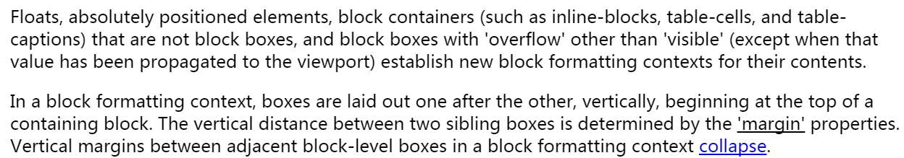

BFC(Block Formatting Context)
北京213期小课堂
分享人：郭婷婷
目录
1.背景介绍
2.知识剖析
3.常见问题
4.解决方案
5.编码实战
6.扩展思考
7.参考文献
8.更多讨论
1.背景介绍
Boxes in the normal flow belong to a formatting context, which may be block or inline, but not both simultaneously. Block-level boxes participate in a block formatting context. Inline-level boxes participate in an inline formatting context.


2.知识剖析
Block formatting contexts
浮动元素、绝对定位元素，不是块级盒的块级包含块(比如inline-block、table-cell、table-capation)和overflow值不为visible的块级盒子为它们的内容建立了一个新的块级排版上下文。
在一个块级排版上下文中，盒子是从包含块顶部开始，垂直的一个接一个的排列的，相邻两个盒子之间的垂直的间距是被margin属性所决定的，在一个块级排版上下文中相邻的两个块级盒之间的垂直margin是折叠的。 （参与BFC的布局的只有普通流normal flow中的块级盒，而float、position值不为relative\static的元素是脱离BFC这一布局环境的，不参与BFC的布局）
在一个块级排版上下文中，每个盒子的左外边是触碰到包含块的左边的（对于从右向左的排版，则相反），即使在有浮动元素参与的情况下也是如此(即使一个盒子的行盒是因为浮动而收缩了的)， 除非这个盒子新建了一个块级排版上下文(在某些情况下这个盒子自身会因为floats而变窄)。
BFC布局规则
- 内部的Box会在垂直方向，一个接一个地放置。
- Box垂直方向的距离由margin决定。属于同一个BFC的两个相邻Box的margin会发生重叠。
- 每个元素的margin box的左边，与容器块border box的左边相接触(对于从左往右的格式化，否则相反)。即使存在浮动也是如此。
- BFC就是页面上的一个隔离的独立容器，容器里面的子元素不会影响到外面的元素，反之亦然。
- 计算BFC的高度时，考虑BFC所包含的所有元素，连浮动元素也参与计算。
- 浮动的BOX区域不叠加到BFC上。
3.常见问题
3.1 如何触发BFC？
3.2 BFC的作用
4 解决方案
4.1 触发BFC
根元素
float属性不为none
position为absolute或fixed
display为inline-blcok、table-cell、table-caption、flex、inline-flex
overflow不为visible
4.2 BFC的作用
5.编码实战
6.扩展思考
不同条件触发BFC产生的效果是否一样？
7.参考文献
参考2：什么是BFC
8 更多讨论
鸣谢
感谢大家观看
BY : 郭婷婷